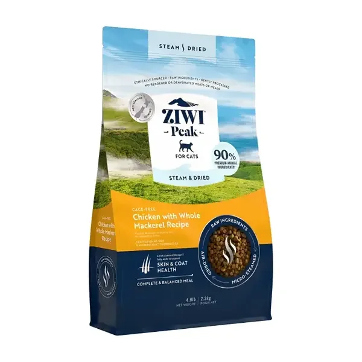

ZIWI Peak
ZIWI Peak Steam-Dried（蒸乾糧）
貓用蒸乾糧・雞／牛／魚・800g／2.2kg 袋
單次購買最低（不需訂閱）：petfooddiscount.nl Chicken 2.2kg €36.34/kg
持平歷史低價
價格水準：資料累積中（已有 5／7 天）
商店報價（依每單位價排序）
| 店家 | 規格 | 總價 | 每單位價 | 條件 | 購買 |
|---|---|---|---|---|---|
| Medpets | Chicken 2.2kg | €78.30 | €35.59/kg | €4.95，未滿 €69；滿 €69 免運；本品免運 需訂閱定期配送 2026-11-26 live browser：Chicken 2.2kg €83.30 一次價／Herhaal €78.30，價格不變，有貨，仍為最佳價（雞肉 2.2kg Herhaal €78.30＝€35.59/kg）。滿 €69 免運。 | 前往 → |
| Medpets | Fish 2.2kg | €78.30 | €35.59/kg | 滿 €69 免運；本品免運 需訂閱定期配送 2026-11-26 live browser：Fish 2.2kg €83.30 一次價／Herhaal €78.30，價格不變，由昨日缺貨轉為回貨「Op voorraad」。注意：舊網址已 404，商品已移至新網址。 | 前往 → |
| petfooddiscount.nl | Chicken 2.2kg | €79.95 | €36.34/kg | 運費 €4.95 建議價 €89.95；2026-11-26 live browser：Chicken 2.2kg €79.95（建議價 €89.95），價格不變，有貨；免運 €49。 | 前往 → |
| petfooddiscount.nl | Beef 2.2kg | €79.95 | €36.34/kg | 滿 €49 免運；本品免運 2026-11-26 live browser：Beef 2.2kg €79.95（建議價 €89.95），價格不變，有貨；免運 €49。 | 前往 → |
| petfooddiscount.nl | Fish 2.2kg | €79.95 | €36.34/kg | 滿 €49 免運；本品免運 2026-11-26 live browser：Fish 2.2kg €79.95（建議價 €89.95），價格不變，有貨；免運 €49。 | 前往 → |
| Medpets | Fish 800g | €29.35 | €36.69/kg | 運費 €4.95 需訂閱定期配送 2026-11-26 live browser：Fish 800g €31.20 一次價／Herhaal €29.35，價格不變，由昨日缺貨轉為回貨「Op voorraad」。注意：舊網址已 404，商品已移至新網址。 | 前往 → |
| petfooddiscount.nl | Chicken 800g | €29.95 | €37.44/kg | 運費 €4.95 建議價 €34.95；2026-11-26 live browser：Chicken 800g €29.95（建議價 €34.95），價格不變，有貨；免運 €49。 | 前往 → |
| petfooddiscount.nl | Beef 800g | €29.95 | €37.44/kg | 運費 €4.95 2026-11-26 live browser：Beef 800g €29.95（建議價 €34.95），價格不變，有貨；免運 €49。 | 前往 → |
| petfooddiscount.nl | Fish 800g | €29.95 | €37.44/kg | 運費 €4.95 2026-11-26 live browser：Fish 800g €29.95（建議價 €34.95），價格不變，有貨；免運 €49。 | 前往 → |
| Medpets | Beef 2.2kg | €83.30 | €37.86/kg | 滿 €69 免運；本品免運 2026-11-26 live browser：Beef 2.2kg €83.30 一次價／Herhaal €78.30，價格不變，有貨。注意：舊網址已 404，商品已移至新網址。 | 前往 → |
| Coolshop.nl | Chicken 2.2kg | €83.50 | €37.95/kg | 滿 €21.99 免運；本品免運 2026-11-26 live browser：Chicken 2.2kg €83.50，價格不變，OP VOORRAAD；滿 €21.99 免運；預計送達 3–6 工作天；頁面有 Black Friday 導覽連結。 | 前往 → |
| CutieCat | Chicken 2.2kg | €84.50 | €38.41/kg | 滿 €45 免運；本品免運 2026-11-26 live browser：Chicken 2.2kg €84.50，價格不變，有貨；免運 €45（BE €59）。 | 前往 → |
| Poezenparadijs.nl | Chicken 2.2kg | €84.50 | €38.41/kg | 運費 €3.95 2026-11-26 live browser：Chicken 2.2kg €84.50，價格不變，有貨；送貨 1–2 werkdagen。 | 前往 → |
| CutieCat | Beef 2.2kg | €84.50 | €38.41/kg | 滿 €45 免運；本品免運 2026-11-26 live browser：Beef 2.2kg €84.50，價格不變，有貨。 | 前往 → |
| CutieCat | Fish 2.2kg | €84.50 | €38.41/kg | 滿 €45 免運；本品免運 2026-11-26 live browser：Fish 2.2kg €84.50，價格不變，有貨。 | 前往 → |
| CutieCat | Chicken 800g | €32.50 | €40.62/kg | 滿 €45 免運 2026-11-26 live browser：Chicken 800g €32.50，價格不變，有貨。 | 前往 → |
| Poezenparadijs.nl | Chicken 800g | €32.50 | €40.62/kg | 運費未顯示 2026-11-26 live browser：Chicken 800g €32.50，價格不變，有貨。 | 前往 → |
| CutieCat | Beef 800g | €32.50 | €40.62/kg | 滿 €45 免運 2026-11-26 live browser：Beef 800g €32.50，價格不變，有貨。 | 前往 → |
| CutieCat | Fish 800g | €32.50 | €40.62/kg | 滿 €45 免運 2026-11-26 live browser：Fish 800g €32.50，價格不變，有貨。 | 前往 → |
| Medpets | Chicken 800g | €29.35 | €36.69/kg | 運費 €4.95 需訂閱定期配送 缺貨 2026-11-26 live browser：Chicken 800g €31.20 一次價／Herhaal €29.35，價格不變，仍缺貨「Snel weer leverbaar」。 | 前往 → |
| Medpets | Beef 800g | €29.35 | €36.69/kg | 運費 €4.95 需訂閱定期配送 缺貨 2026-11-26 live browser：Beef 800g €31.20 一次價／Herhaal €29.35，價格不變，仍缺貨「Snel weer leverbaar」，預計 09-12-2026 到貨。注意：舊網址已 404，商品已移至新網址。 | 前往 → |
| bol.com (Best Petfoods) | Chicken 2.2kg | €84.50 | €38.41/kg | 含運費；bol 訂單 €25 起免運 沿用 2026-11-25 報價 2026-11-25 live browser：Chicken 2.2kg €84.50 有貨，與 2026-11-24 相同，無變化。含運費，15:00 前下單隔日到貨。 | 前往 → |
| bol.com (Best Petfoods) | Fish 2.2kg | €84.50 | €38.41/kg | 含運費 沿用 2026-11-25 報價 2026-11-25 live browser：Fish 2.2kg €84.50 有貨，與 2026-11-24 相同，無變化；同頁 800g 規格顯示 Niet leverbaar。含運費，15:00 前下單隔日到貨。 | 前往 → |
| bol.com (Medpets) | Chicken 2.2kg | €88.25 | €40.11/kg | 含運費 沿用 2026-11-25 報價 2026-11-25 live browser：bol.com 價格總覽 Chicken 2.2kg 最低 Best Petfoods €84.50；Medpets.nl €88.25，兩賣家均有貨、含運費，與 2026-11-24 相同，無變化。共 2 位新品賣家。 | 前往 → |
| bol.com (Best Petfoods) | Chicken 800g | €43.48 | €54.35/kg | 含運費 沿用 2026-11-25 報價 2026-11-25 live browser：Chicken 800g €43.48 有貨，與 2026-11-24 相同，無變化；仍為 800g 最高價（€54.35/kg）。含運費，15:00 前下單隔日到貨。 | 前往 → |
| koopvogel.com | Chicken 2.2kg | €23.96 | €10.89/kg | 運費 €13.00 沿用 2026-11-22 報價 未核實 特價，原價 €32.50；2026-11-22 live browser：Chicken 2.2kg €23.96（原價 €32.50），購物車亦以 €23.96 計入。價格異常：該站 800g 與 2.2kg 均顯示同一價格 €23.96／原價 €32.50，遠低於其他店家 €79.95–88.25，疑似店家規格定價錯誤；列為 partly_verified，不進最佳價排名，引用前務必再向店家確認。 | 前往 → |